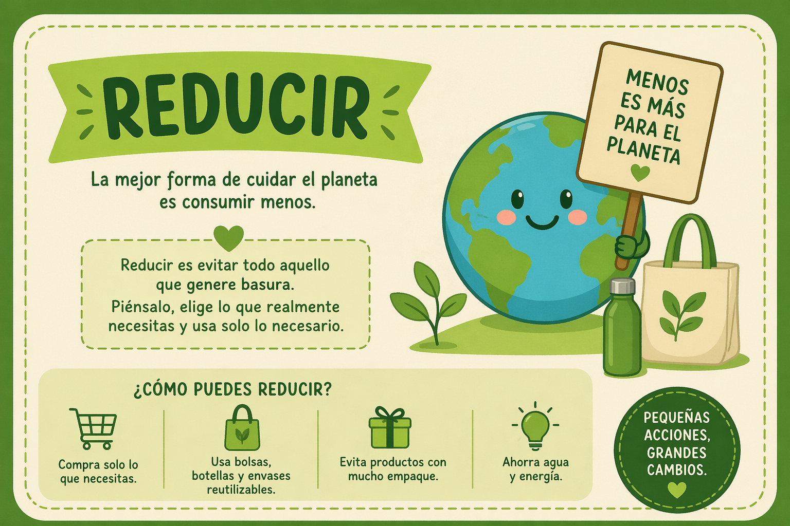
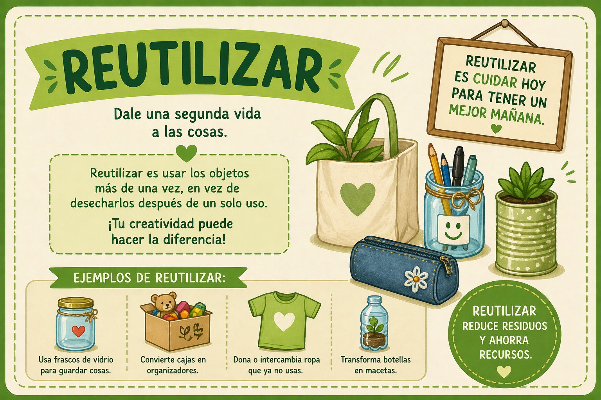
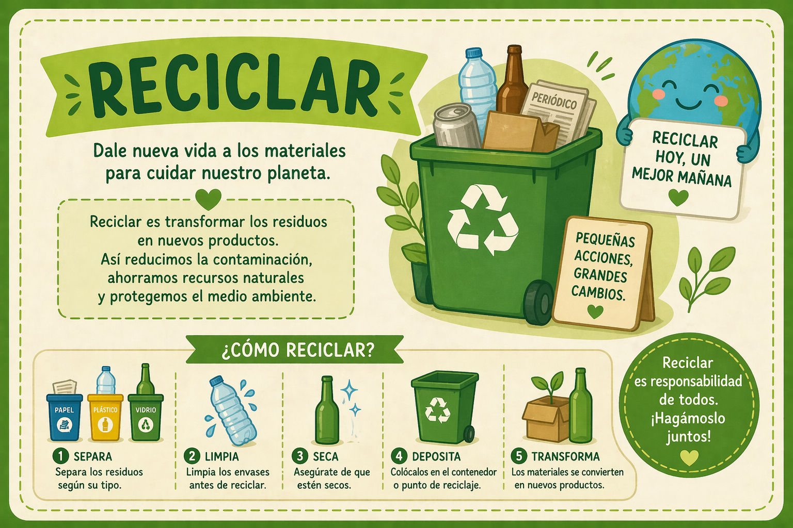

Educando niños de 7 años con las 3R para cuidar el planeta mediante actividades prácticas y creativas.
Reducir es la primera y más importante de las 3Rs, enfocada en disminuir el consumo y la generación de residuos. Consiste en evitar el desperdicio innecesario de productos, energía y agua, prefiriendo alternativas duraderas, productos a granel y limitando el uso de plásticos de un solo uso para cuidar el medio ambiente.

Reutilizar es la segunda "R" en la regla de las 3R, enfocada en alargar la vida útil de los objetos antes de desecharlos. Implica dar un nuevo uso o propósito a productos, envases y materiales, disminuyendo la generación de basura y ahorrando recursos.

Reciclar es la tercera "R" en la regla de las 3R, es un modelo de gestión de residuos que busca disminuir la basura generada, priorizando el consumo responsable y el cuidado ambiental. Consiste en reducir el consumo de productos, alargar la vida útil de los objetos y transformar los residuos en nuevos materiales.

Niños concientizados
Actividades realizadas
Compromiso ecológico